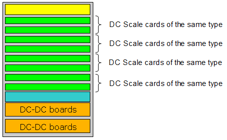

Pogo pin assignment - DC Scale cards
DC-Scale cards contain independently programmable channels. The DC Scale cards reside in I/O channel card slots.
Supported V93000 system generations and variants
This section holds the pogo pin layouts for all V93000 system generations and variants. For the supported set of test head cards on your system, refer to Pogo pin assignment.
Filling rules for V93000 Smart Scale and Pin Scale systems
The DC Scale cards can reside in any channel card slot of the card cage. A pair of adjacent odd and even slots must be filled with the same card type. For details see Card compatibility.
These filling rules apply only to V93000 Pin Scale and Smart Scale systems. The filling rules do not have to be observed for V93000 EXA Scale systems.

Functional changes
- Introduced before SmarTest 6.3.2
- SmarTest 7.3.1: DC Scale PVI8 card added.
- SmarTest 7.4.0: DC Scale AVI64 card added.
- SmarTest 7.5.0: DC Scale FVI16 card added.
- SmarTest 7.6.0 / 8.3.4: DC Scale XPS256 card added.